来表示一个函数。例如，
来表示一个函数。例如， 意味着一个将
意味着一个将 作为输入并返回
作为输入并返回 作为输出的函数。也可以表示为
作为输出的函数。也可以表示为 。
。梯度下降法是最流行、应用最广泛的优化算法之一，是一种一阶优化算法。一阶优化意味着我们只计算一阶导数。正如我们在第一章、深度学习简介中看到的，我们使用了梯度下降，并计算了损失函数相对于网络权重的一阶导数，以最小化损失。
梯度下降不仅适用于神经网络，它还用于我们需要找到函数最小值的情况。在这一章中，我们将从基础开始更深入地研究梯度下降，并学习梯度下降算法的几种变体。有各种各样的梯度下降用于训练神经网络。首先我们会了解随机梯度下降 ( SGD )和小批量梯度下降。然后，我们将探索如何使用动量来加速梯度下降，以达到收敛。在本章的后面，我们将学习如何使用各种算法以自适应的方式执行梯度下降，如Adagrad、Adadelta、RMSProp、Adam、Adamax、AMSGrad和Nadam。我们将采用一个简单的线性回归方程，看看如何使用各种类型的梯度下降算法找到线性回归成本函数的最小值。
在本章中，我们将了解以下主题:
在进入细节之前，让我们先了解一下基本情况。什么是数学中的函数？函数表示输入和输出之间的关系。我们通常用来表示一个函数。例如，意味着一个将作为输入并返回作为输出的函数。也可以表示为。
这里，我们有一个函数， ，我们可以绘制并查看我们的函数看起来像什么:
，我们可以绘制并查看我们的函数看起来像什么:
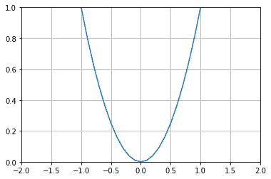
一个函数的最小值叫做一个函数的最小值。正如您在前面的图中看到的，函数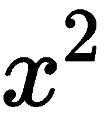的最小值位于0。前一个函数叫做凸函数，这里我们只有一个最小值。当有一个以上的最小值时，一个函数称为非凸函数。正如我们在下图中看到的，一个非凸函数可以有许多局部最小值和一个全局最小值，而一个凸函数只有一个全局最小值:
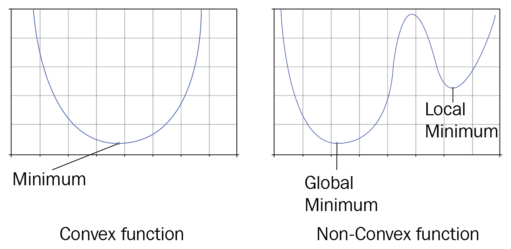
通过查看 函数的图形，我们可以很容易地说，它在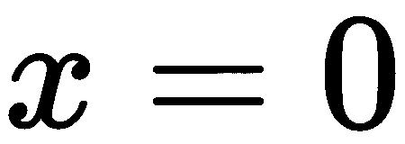处有最小值。但是怎么才能从数学上找到函数的最小值呢？首先，我们假设 x = 0.7 。因此，我们处于 x = 0.7，的位置，如下图所示:
函数的图形，我们可以很容易地说，它在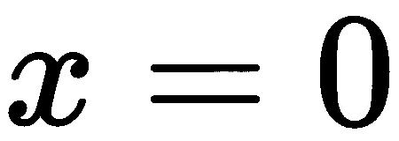处有最小值。但是怎么才能从数学上找到函数的最小值呢？首先，我们假设 x = 0.7 。因此，我们处于 x = 0.7，的位置，如下图所示:

现在，我们需要去零，这是我们的最小值，但如何才能达到它？我们可以通过计算函数 的导数来达到。因此，函数
的导数来达到。因此，函数 相对于
相对于 的导数如下:
的导数如下:

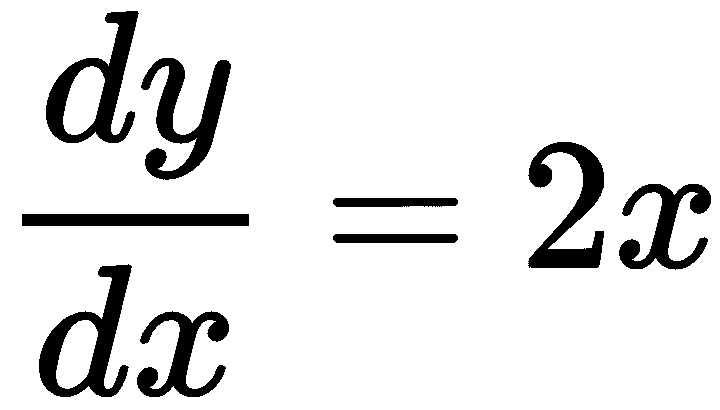
由于我们在 x = 0.7 ，并将其代入之前的等式，我们得到以下等式:
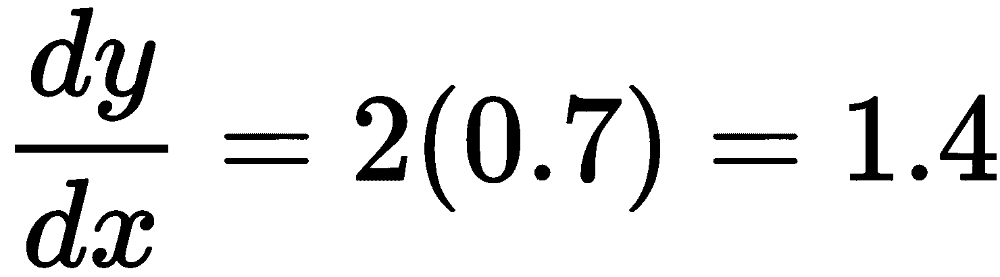
计算导数后，我们根据以下更新规则更新我们的位置 :
:
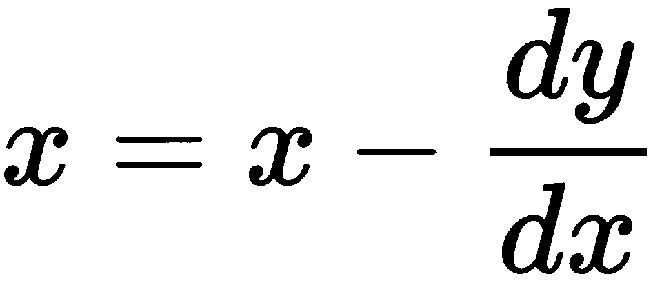
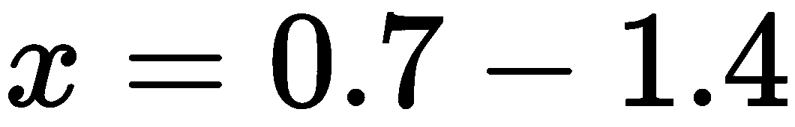
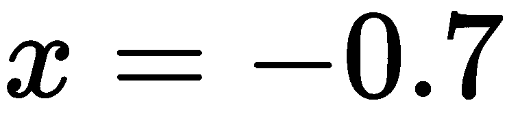
正如我们在下图中看到的，我们最初位于 x = 0.7 ，但是，在计算梯度后，我们现在位于更新后的位置 x = -0.7 。然而，这是我们不想要的东西，因为我们错过了我们的最小值，即 x = 0 ，并且到达了其他地方:
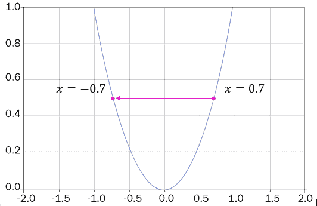
为了避免这种情况，我们在更新规则中引入了一个名为学习率的新参数 。这有助于我们放慢梯度步骤，这样我们就不会错过最小点。我们将梯度乘以学习率，并更新
。这有助于我们放慢梯度步骤，这样我们就不会错过最小点。我们将梯度乘以学习率，并更新 值，如下所示:
值，如下所示:
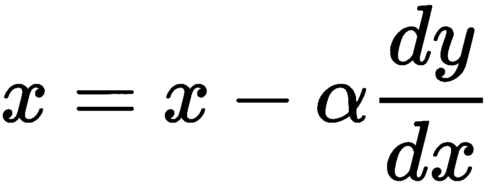
先说那个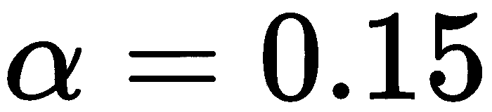；现在，我们可以编写以下内容:

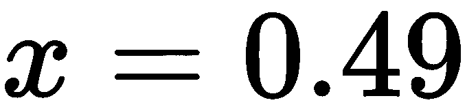
正如我们在下图中看到的，在用更新后的 x 值乘以学习率后，我们从初始位置 x = 0.7、下降到 x = 0.49 :
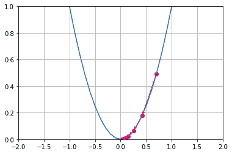
然而，这仍然不是我们的最佳最小值。我们需要进一步下降，直到达到最小值；也就是， x = 0 。因此，对于一些 n 次迭代，我们必须重复相同的过程，直到我们到达最小点。也就是说，对于一些 n 次迭代，我们使用以下更新规则更新 x 的值，直到我们到达最小点:

好的——为什么前面的等式中有一个负号？也就是说，为什么我们要从 x 中减去 ？为什么我们不能把它们相加，得到我们的方程为
？为什么我们不能把它们相加，得到我们的方程为 ？
？
这是因为我们正在寻找一个函数的最小值，所以我们需要向下。如果我们将 x 加到 上，那么我们每次迭代都向上，我们找不到最小值，如下图所示:
上，那么我们每次迭代都向上，我们找不到最小值，如下图所示:
| 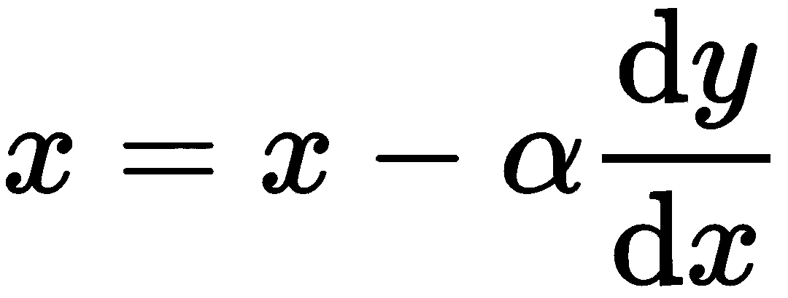 | 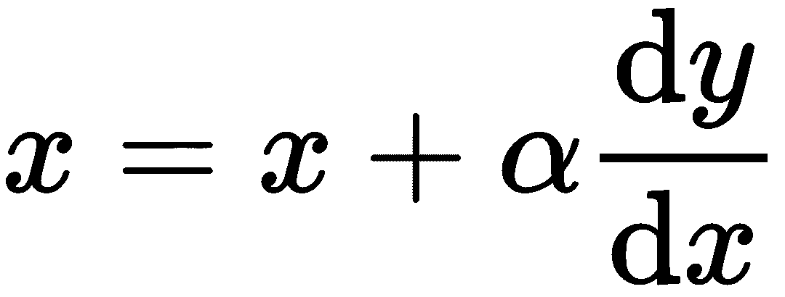 |
| 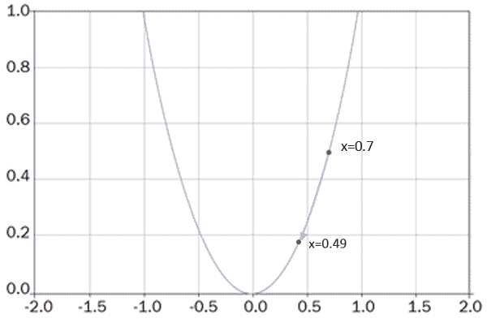 | 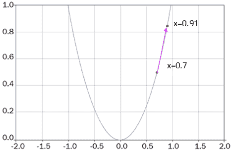 |
因此，在每次迭代中，我们计算 y 相对于 x的梯度，即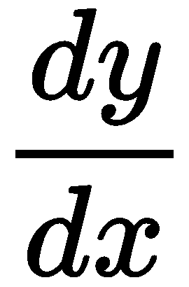，将梯度乘以学习率，即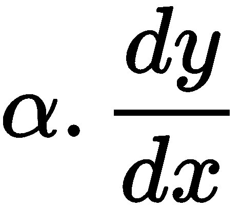，并将其从 x 值中减去，以获得更新后的 x 值，如下所示:

通过在每一次迭代中重复这一步，我们从成本函数向下并到达最小值点。正如我们在下图中看到的，我们从0.7的初始位置向下移动到0.49，然后，从那里，我们到达0.2。
然后，在几次迭代之后，我们到达最小值点，即0.0:
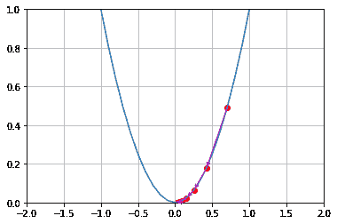
当我们达到函数的最小值时，我们说我们达到了收敛。但问题是:我们如何知道我们达到了趋同？在我们的例子 中，我们知道最小值是0。所以，当我们达到0时，我们可以说我们找到了最小值，我们达到了收敛。但是我们怎么能从数学上说0是函数的最小值，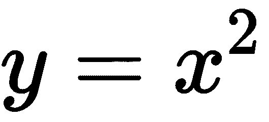？
中，我们知道最小值是0。所以，当我们达到0时，我们可以说我们找到了最小值，我们达到了收敛。但是我们怎么能从数学上说0是函数的最小值，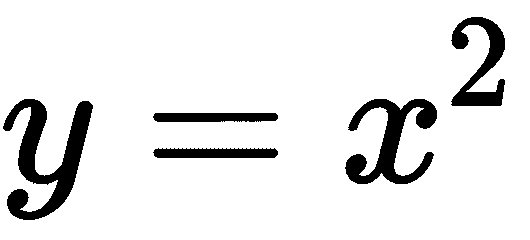？
让我们仔细看看下图，它显示了每次迭代中 x 的值是如何变化的。您可能会注意到， x 的值在第五次迭代中是0.009，在第六次迭代中是0.008，在第七次迭代中是0.007。如你所见，第五次、第六次和第七次迭代之间没有太大的区别。当 x 的值在迭代过程中变化很小时，我们可以得出结论，我们已经达到收敛:
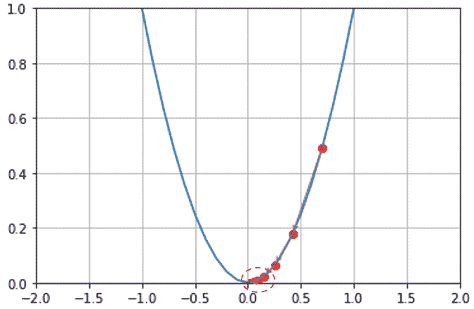
好吧，但是这一切有什么用呢？为什么我们要寻找一个函数的最小值？当我们训练一个模型时，我们的目标是最小化模型的损失函数。因此，通过梯度下降，我们可以找到成本函数的最小值。寻找成本函数的最小值给了我们一个模型的最优参数，用它我们可以获得最小的损失。通常，我们用 表示模型的参数。以下等式被称为参数更新规则或权重更新规则:
表示模型的参数。以下等式被称为参数更新规则或权重更新规则:
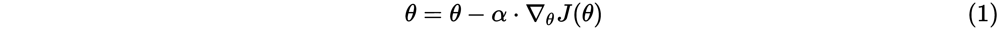
在这里，我们有以下内容:
 是模型的参数
是模型的参数 是学习率
是学习率 是渐变
是渐变我们根据参数更新规则多次迭代更新模型的参数，直到我们达到收敛。
至此，我们已经了解了梯度下降算法是如何找到模型的最优参数的。在本节中，我们将了解如何在线性回归中使用梯度下降并找到最佳参数。
简单线性回归的方程式可以表示如下:
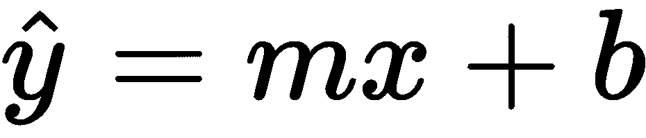
因此，我们有两个参数， 和
和 。现在，我们将看到如何使用梯度下降，并找到这两个参数的最佳值。
。现在，我们将看到如何使用梯度下降，并找到这两个参数的最佳值。
首先，我们需要导入所需的库:
import warnings
warnings.filterwarnings('ignore')
import random
import math
import numpy as np
from matplotlib import pyplot as plt
%matplotlib inline
接下来，我们将生成一些具有500行和2列( x 和 y )的随机数据点，并使用它们进行训练:
data = np.random.randn(500, 2)
如您所见，我们的数据有两列:
print data[0]
array([-0.08575873, 0.45157591])
第一列表示 值:
值:
print data[0,0]
-0.08575873243708057
第二列表示 值:
值:
print data[0,1]
0.4515759149158441
我们知道，简单线性回归的方程表示如下:
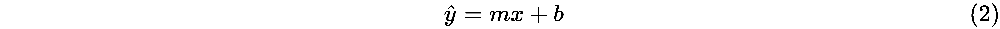
因此，我们有两个参数， 和
和 。我们将这两个参数存储在一个名为theta的数组中。首先，我们用零初始化theta，如下所示:
。我们将这两个参数存储在一个名为theta的数组中。首先，我们用零初始化theta，如下所示:
theta = np.zeros(2)
theta[0]函数代表 的值，而theta[1]函数代表的值:
的值，而theta[1]函数代表的值:
print theta
array([0., 0.])
回归的均方误差 ( MSE )如下:
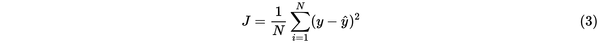
这里， 是训练样本数，
是训练样本数， 是实际值，
是实际值， 是预测值。
是预测值。
这里显示了前面的损失函数的实现。我们将data和模型参数theta提供给损失函数，该函数返回MSE。记住data[,0]有一个 值，而data[,1]有一个
值，而data[,1]有一个 值。类似地，theta [0]的值为m，而theta[1]的值为
值。类似地，theta [0]的值为m，而theta[1]的值为 。
。
让我们定义损失函数:
def loss_function(data,theta):
现在，我们需要得到 和
和 的值:
的值:
m = theta[0]
b = theta[1]
loss = 0
我们对每个迭代都这样做:
for i in range(0, len(data)):
现在，我们得到 和
和 的值:
的值:
x = data[i, 0]
y = data[i, 1]
然后，我们预测 的值:
的值:
y_hat = (m*x + b)
这里，我们按照等式 (3) 计算损耗:
loss = loss + ((y - (y_hat)) ** 2)
然后，我们计算均方误差:
mse = loss / float(len(data))
return mse
当我们输入随机初始化的data和模型参数theta时，loss_function返回均方损失，如下所示:
loss_function(data, theta)
1.0253548008165727
现在，我们需要尽量减少这种损失。为了使损失最小化，我们需要计算损失函数相对于模型参数 和
和 的梯度，并根据参数更新规则更新参数。首先，我们将计算损失函数的梯度。
的梯度，并根据参数更新规则更新参数。首先，我们将计算损失函数的梯度。
损失函数 相对于参数
相对于参数 的梯度如下所示:
的梯度如下所示:

损失函数 相对于参数
相对于参数 的梯度如下所示:
的梯度如下所示:
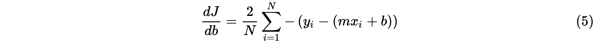
我们定义一个名为compute_gradients的函数，它将参数data和theta作为输入，并返回计算出的梯度:
def compute_gradients(data, theta):
现在，我们需要初始化梯度:
gradients = np.zeros(2)
然后，我们需要将数据点的总数保存在N中:
N = float(len(data))
现在，我们可以得到 和
和 的值:
的值:
m = theta[0]
b = theta[1]
我们对每次迭代都做同样的事情:
for i in range(0, len(data)):
然后，我们得到 和
和 的值:
的值:
x = data[i, 0]
y = data[i, 1]
现在，我们计算损耗相对于 的梯度，如等式 (4) 所示:
的梯度，如等式 (4) 所示:
gradients[0] += - (2 / N) * x * (y - (( m* x) + b))
然后，我们计算损耗相对于 的梯度，如等式 (5) 所示:
的梯度，如等式 (5) 所示:
gradients[1] += - (2 / N) * (y - ((theta[0] * x) + b))
我们需要添加epsilon来避免被零除的错误:
epsilon = 1e-6
gradients = np.divide(gradients, N + epsilon)
return gradients
当我们输入随机初始化的data和theta模型参数时，compute_gradients函数返回相对于 即
即 的梯度，以及相对于
的梯度，以及相对于 即
即 的梯度，如下所示:
的梯度，如下所示:
compute_gradients(data,theta)
array([-9.08423989e-05, 1.05174511e-04])
现在我们已经计算了梯度，我们需要根据我们的更新规则更新我们的模型参数，如下所示:
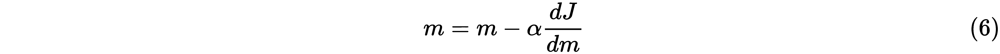
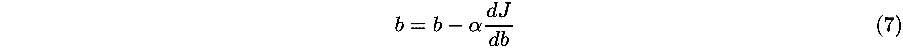
由于我们将 存储在theta[0]中，将
存储在theta[0]中，将 存储在theta[1]中，因此我们可以将更新等式写成如下:
存储在theta[1]中，因此我们可以将更新等式写成如下:
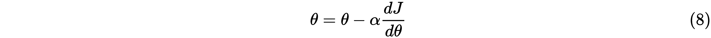
正如我们在上一节中了解到的，仅在一次迭代中更新梯度不会使我们收敛，即成本函数的最小值，因此我们需要计算梯度并在多次迭代中更新模型参数。
首先，我们需要设置迭代次数:
num_iterations = 50000
现在，我们需要定义学习率:
lr = 1e-2
接下来，我们将定义一个名为loss的列表，用于存储每次迭代的损失:
loss = []
在每次迭代中，我们将根据等式 (8) 中的参数更新规则计算并更新梯度:
theta = np.zeros(2)
for t in range(num_iterations):
#compute gradients
gradients = compute_gradients(data, theta)
#update parameter
theta = theta - (lr*gradients)
#store the loss
loss.append(loss_function(data,theta))
现在，我们需要绘制loss ( Cost)函数:
plt.plot(loss)
plt.grid()
plt.xlabel('Training Iterations')
plt.ylabel('Cost')
plt.title('Gradient Descent')
下图显示了损失(成本)如何在训练迭代中减少:
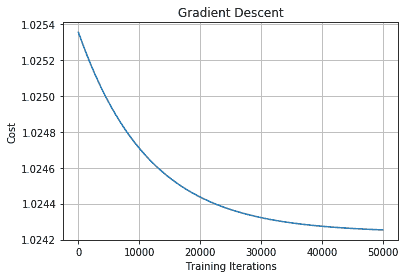
因此，我们了解到梯度下降可以用来找到模型的最佳参数，然后我们可以用它来最小化损失。在下一节中，我们将了解梯度下降算法的几种变体。
我们用我们的参数更新方程 (1) 多次更新模型的参数，直到我们找到最佳参数值。在梯度下降中，为了执行单个参数更新，我们迭代训练集中的所有数据点。因此，每次我们更新模型的参数时，我们都会遍历训练集中的所有数据点。仅在迭代训练集中的所有数据点之后更新模型的参数使得梯度下降非常缓慢，并且将增加训练时间，尤其是当我们具有大数据集时。
假设我们有一个包含一百万个数据点的训练集。我们知道，我们多次更新模型的参数，以找到最佳的参数值。因此，即使执行单个参数更新，我们也要检查训练集中的所有一百万个数据点，然后更新模型参数。这样肯定会让训练变慢。这是因为我们不能只通过一次更新就找到最佳参数；我们需要多次更新模型的参数，以找到最优值。因此，如果我们在每次参数更新时都迭代训练集中的所有100万个数据点，这肯定会降低我们的训练速度。
因此，为了解决这个问题，我们引入了随机梯度下降 ( SGD )。与梯度下降不同，我们不必等到迭代完我们训练集中的所有数据点后才更新模型的参数；我们只是在迭代训练集中的每个数据点后更新模型的参数。
由于我们在迭代每个单个数据点之后更新SGD中的模型参数，因此与梯度下降相比，它将更快地学习模型的最佳参数，并且这将最小化训练时间。
新币怎么用？当我们有一个巨大的数据集时，通过使用普通梯度下降方法，我们仅在迭代通过该巨大数据集中的所有数据点之后更新参数。因此，在对整个数据集进行多次迭代后，我们达到了收敛，显然，这需要很长时间。但是，在SGD中，我们在迭代每个训练样本后更新参数。也就是说，我们正在学习从第一个训练样本中找到最佳参数，这有助于比普通梯度下降法更快地实现收敛。
我们知道，epoch指定了神经网络看到整个训练数据的次数。因此，在梯度下降中，在每个时期，我们执行参数更新。这意味着，在每个时期之后，神经网络看到整个训练数据。我们如下执行每个时期的参数更新:

但是，在随机梯度下降中，我们不必等到每个历元完成后才更新参数。也就是说，我们不必等到神经网络看到整个训练数据才更新参数。相反，我们通过查看每个时期的单个训练样本来更新网络的参数:
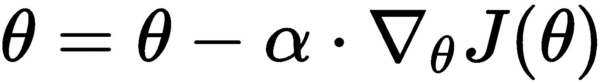
以下等值线图显示了梯度下降和随机梯度下降如何执行参数更新并找到最小成本。图中心的星形符号表示成本最低的位置。正如你所看到的，SGD比普通梯度下降更快地达到收敛。你也可以在SGD上观察梯度台阶的振荡；这是因为我们正在为每个训练样本更新参数，因此，与普通梯度下降相比，SGD中的梯度步长变化频繁:
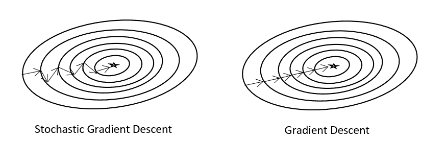
还有另一种梯度下降的变体叫做小批量梯度下降。它结合了传统梯度下降法和随机梯度下降法的优点。在SGD中，我们看到我们为每个训练样本更新模型的参数。然而，在小批量梯度下降中，我们不是在迭代每个训练样本后更新参数，而是在迭代一些批次的数据点后更新参数。假设批量大小为50，这意味着我们在迭代50个数据点后更新模型的参数，而不是在迭代每个单独的数据点后更新参数。
下图显示了SGD和小批量梯度下降的等值线图:
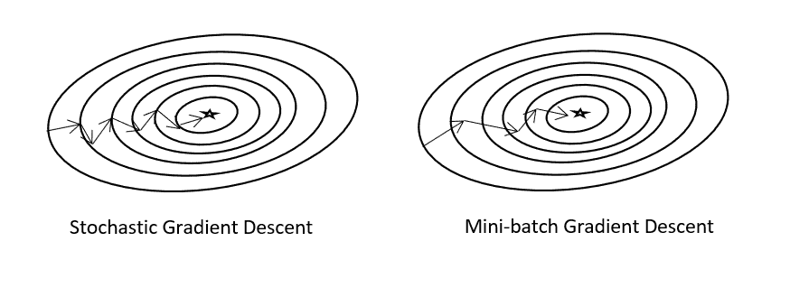
简而言之，这些梯度下降类型之间的差异如下:
对于大型数据集，小批量梯度下降优于普通梯度下降和SGD，因为小批量梯度下降优于其他两种。
小批量梯度下降的代码如下。
首先，我们需要定义minibatch函数:
def minibatch(data, theta, lr = 1e-2, minibatch_ratio = 0.01, num_iterations = 1000):
接下来，我们将通过将数据长度乘以minibatch_ratio来定义minibatch_size:
minibatch_size = int(math.ceil(len(data) * minibatch_ratio))
现在，在每次迭代中，我们执行以下操作:
for t in range(num_iterations):
接下来，选择sample_size:
sample_size = random.sample(range(len(data)), minibatch_size)
np.random.shuffle(data)
现在，根据sample_size对数据进行采样:
sample_data = data[0:sample_size[0], :]
计算sample_data相对于theta的梯度:
grad = compute_gradients(sample_data, theta)
在用给定的小批量计算取样数据的梯度后，我们更新模型参数theta，如下所示:
theta = theta - (lr * grad)
return theta
在本节中，我们将了解梯度下降的两种新变体，称为动量和内斯特罗夫加速梯度。
由于参数更新中的振荡，SGD和小批量梯度下降存在问题。请看下图，它显示了小批量梯度下降是如何达到收敛的。如你所见，梯度阶跃中存在振荡。虚线示出了振荡。正如你可能注意到的，它向一个方向渐变，然后转向另一个方向，以此类推，直到达到收敛:
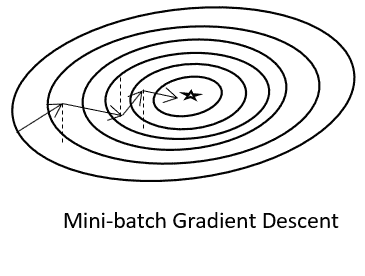
发生这种振荡是因为，由于我们在迭代每 n 个数据点后更新参数，更新的方向会有一些变化，这导致每个梯度步长中的振荡。由于这种振荡，很难达到收敛，并且减慢了达到收敛的过程。
为了缓解这种情况，我们将引入一种叫做动量的新技术。如果我们能够理解梯度步骤更快达到收敛的正确方向，那么我们能够使我们的梯度步骤在该方向上导航，并且减少不相关方向上的振荡；也就是说，我们可以减少采取不会导致我们收敛的方向。
那么，我们如何做到这一点呢？我们基本上从先前的梯度步骤中提取一小部分参数更新，并将其添加到当前的梯度步骤中。在物理学中，动量使物体在受力后保持运动。在这里，动量使我们的梯度朝着收敛的方向移动。
如果你看看下面的等式，你可以看到我们基本上是从上一步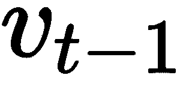中获取参数更新，并将其添加到当前梯度步骤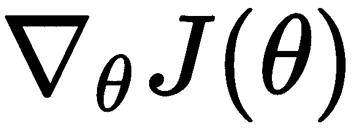。我们想要从先前的梯度步骤中获取多少信息取决于因子，即 和学习率，由
和学习率，由 表示:
表示:
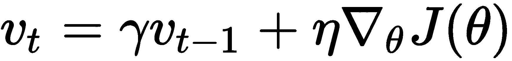
在上式中，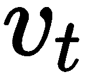称为速度，它在导致收敛的方向上加速梯度。它还通过将前一步骤的一部分参数更新添加到当前步骤来减少不相关方向上的振荡。
因此，具有动量的参数更新方程表示如下:

通过这样做，执行带有动量的小批量梯度下降有助于我们减少梯度步骤中的振荡并更快地达到收敛。
现在，让我们看看动量的实现。
首先，我们定义momentum函数，如下所示:
def momentum(data, theta, lr = 1e-2, gamma = 0.9, num_iterations = 1000):
然后，我们用零初始化vt:
vt = np.zeros(theta.shape[0])
执行以下代码以覆盖每次迭代的范围:
for t in range(num_iterations):
现在，我们根据theta计算gradients:
gradients = compute_gradients(data, theta)
接下来，我们将vt更新为 :
:
vt = gamma * vt + lr * gradients
现在，我们将模型参数theta更新为 :
:
theta = theta - vt
return theta
动量的一个问题是它可能会错过最小值。也就是说，当我们向收敛(最小点)靠近时，动量的值将会很高。当动量的值很高，而我们接近达到收敛时，那么动量实际上将梯度步长推高，并且它可能错过实际的最小值；也就是说，当我们接近收敛时，动量很高，它可能会超过最小值，如下图所示:

为了克服这一点，内斯特罗夫引入了一种叫做内斯特罗夫加速梯度 ( NAG )的新方法。
内斯特罗夫动量背后的基本动机是，我们不是计算当前位置的梯度，而是计算动量将带我们去的位置的梯度，我们把那个位置称为前瞻位置。
然而，这意味着什么呢？在动量梯度下降部分，我们了解了以下等式:
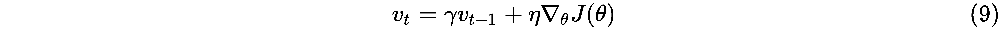
前面的等式告诉我们，我们基本上是使用前一步骤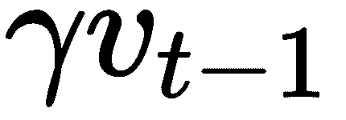的一小部分参数更新将当前梯度步骤 推到一个新位置，这将帮助我们实现收敛。但是，当动量较高时，这个新位置实际上会超过最小值。
推到一个新位置，这将帮助我们实现收敛。但是，当动量较高时，这个新位置实际上会超过最小值。
因此，在利用动量进行梯度步骤并到达新位置之前，如果我们了解动量将把我们带到哪个位置，那么我们可以避免超过最小值。如果我们发现动量会把我们带到实际上错过最小值的位置，那么我们就可以放慢动量，努力达到最小值。
但是我们怎样才能找到动量将把我们带到的位置呢？在等式 (2) 中，我们计算相对于 的梯度，而不是相对于当前梯度步长
的梯度，而不是相对于当前梯度步长 计算梯度。术语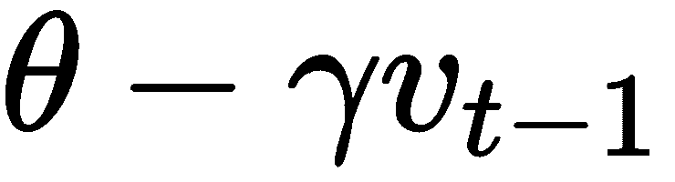，基本上告诉我们下一个梯度步骤的大概位置。我们称之为前瞻位置。这给了我们一个想法，我们的下一个梯度步骤将在哪里。
计算梯度。术语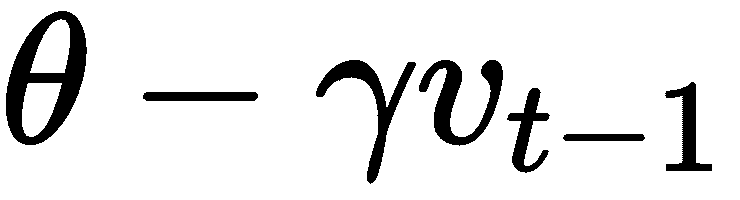，基本上告诉我们下一个梯度步骤的大概位置。我们称之为前瞻位置。这给了我们一个想法，我们的下一个梯度步骤将在哪里。
因此，我们可以根据NAG将我们的 方程改写如下:
方程改写如下:

我们将参数更新如下:

当梯度步骤接近收敛时，用前面的方程更新参数通过减慢动量来防止我们错过最小值。内斯特罗夫加速方法实现如下。
首先，我们定义NAG函数:
def NAG(data, theta, lr = 1e-2, gamma = 0.9, num_iterations = 1000):
然后，我们用零初始化vt的值:
vt = np.zeros(theta.shape[0])
对于每次迭代，我们执行以下步骤:
for t in range(num_iterations):
现在，我们需要计算相对于 的梯度:
的梯度:
gradients = compute_gradients(data, theta - gamma * vt)
然后，我们将vt更新为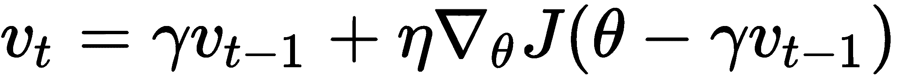:
vt = gamma * vt + lr * gradients
现在，我们将模型参数theta更新为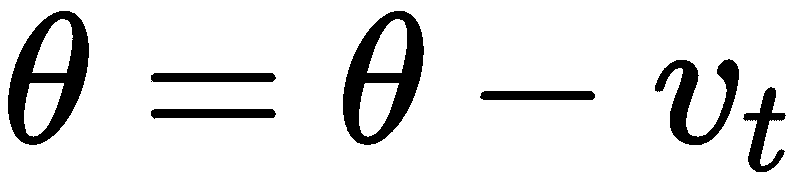:
theta = theta - vt
return theta
在本节中，我们将了解梯度下降的几个自适应版本。
当我们建立一个深度神经网络时，我们有许多参数。参数基本上就是网络的权重，所以当我们构建一个有很多层的网络时，我们会有很多权重，比如说，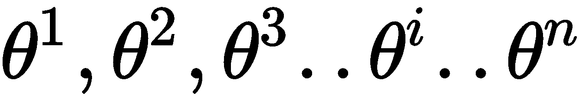。我们的目标是找到所有这些权重的最优值。在我们之前学习的所有方法中，学习率是网络所有参数的公共值。然而 Adagrad (简称自适应梯度)根据参数自适应地设置学习率。
具有频繁更新或高梯度的参数将具有较慢的学习速率，而具有不频繁更新或小梯度的参数也将具有较慢的学习速率。但是我们为什么要这样做呢？是因为不经常更新的参数暗示着它们训练的不够，所以我们给它们设置了很高的学习率，而频繁更新的参数暗示着它们训练的足够，所以我们把它们的学习率设置的很低，这样我们就不会超调最小值。
现在，让我们看看Adagrad如何自适应地改变学习速率。之前我们用 表示渐变。为了简单起见，从这一章开始，我们将用
表示渐变。为了简单起见，从这一章开始，我们将用 来表示渐变。因此，在迭代
来表示渐变。因此，在迭代 中，参数
中，参数 的梯度可以表示如下:
的梯度可以表示如下:
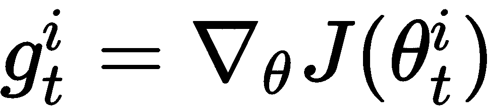
因此，我们可以用 作为梯度符号来重写我们的更新方程，如下所示:
作为梯度符号来重写我们的更新方程，如下所示:
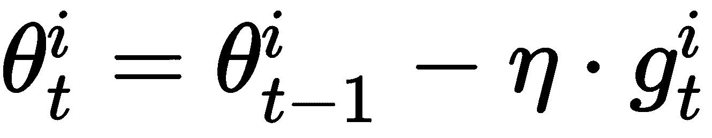
现在，对于每次迭代 ，为了更新参数
，为了更新参数 ，我们将学习率除以参数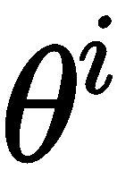的所有先前梯度的平方和，如下所示:
，我们将学习率除以参数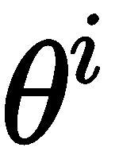的所有先前梯度的平方和，如下所示:

这里， 意味着参数
意味着参数 的所有先前梯度的平方和。我们添加了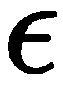只是为了避免被零除的错误。我们通常将
的所有先前梯度的平方和。我们添加了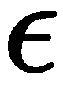只是为了避免被零除的错误。我们通常将 的值设置为一个小数字。这里出现的问题是，为什么我们要把学习率除以所有之前梯度的平方和？
的值设置为一个小数字。这里出现的问题是，为什么我们要把学习率除以所有之前梯度的平方和？
我们了解到，具有频繁更新或高梯度的参数将具有较慢的学习速率，而具有不频繁更新或小梯度的参数也将具有较高的学习速率。
总和 实际上衡量了我们的学习速度。也就是说，当过去梯度的平方之和有一个高值的时候，我们基本上是在用一个高值来除学习率，所以我们的学习率会变小。类似地，如果过去梯度的平方和具有较低的值，我们将学习率除以较低的值，因此我们的学习率值将变高。这意味着学习速率与参数的所有先前梯度的平方和成反比。
实际上衡量了我们的学习速度。也就是说，当过去梯度的平方之和有一个高值的时候，我们基本上是在用一个高值来除学习率，所以我们的学习率会变小。类似地，如果过去梯度的平方和具有较低的值，我们将学习率除以较低的值，因此我们的学习率值将变高。这意味着学习速率与参数的所有先前梯度的平方和成反比。
这里，我们的更新等式表示如下:

简而言之，在Adagrad中，我们在前一个梯度值较高时将学习率设置为低值，在过去的梯度值较低时将学习率设置为高值。这意味着我们的学习率值根据参数的过去梯度更新而变化。
现在我们已经了解了Adagrad算法的工作原理，让我们通过实现它来巩固我们的知识。Adagrad算法的代码如下所示。
首先，定义AdaGrad函数:
def AdaGrad(data, theta, lr = 1e-2, epsilon = 1e-8, num_iterations = 10000):
定义名为gradients_sum的变量来保存梯度的总和，并用零初始化它们:
gradients_sum = np.zeros(theta.shape[0])
对于每次迭代，我们执行以下步骤:
for t in range(num_iterations):
然后，我们计算相对于theta的损失的gradients:
gradients = compute_gradients(data, theta)
现在，我们计算梯度平方的和，即:
gradients_sum += gradients ** 2
之后，我们计算梯度更新，即:
gradient_update = gradients / (np.sqrt(gradients_sum + epsilon))
现在，更新theta模型参数，使其成为 :
:
theta = theta - (lr * gradient_update)
return theta
同样，Adagrad方法也有缺点。对于每次迭代，我们都在累加和求和所有过去的平方梯度。因此，在每次迭代中，我们的过去梯度值的平方和将增加。当过去梯度值的平方和很高时，我们将在分母中有一个很大的数。当我们把学习率除以一个非常大的数，那么学习率就会变得非常小。因此，经过几次迭代，学习率开始衰减，变成一个无穷小的数字——也就是说，我们的学习率将单调递减。当学习速率达到一个非常低的值时，就需要很长时间才能达到收敛。
在下一节中，我们将看到Adadelta如何解决这个缺点。
Adadelta是Adagrad算法的增强。在阿达格勒，我们注意到学习率下降到很低的问题。虽然Adagrad自适应地学习学习速率，但我们仍然需要手动设置初始学习速率。但是，在Adadelta中，我们根本不需要学习率。那么Adadelta算法是如何学习的呢？
在Adadelta中，我们可以设置一个大小为 的窗口，并仅从该窗口中取过去梯度的平方和，而不是取所有过去梯度的平方和。在Adagrad中，我们取所有平方的过去梯度的总和，它导致学习率减少到一个很低的数字。为了避免这种情况，我们只从一个窗口取过去梯度的平方和。
的窗口，并仅从该窗口中取过去梯度的平方和，而不是取所有过去梯度的平方和。在Adagrad中，我们取所有平方的过去梯度的总和，它导致学习率减少到一个很低的数字。为了避免这种情况，我们只从一个窗口取过去梯度的平方和。
如果是窗口大小，那么我们的参数更新等式变成如下:
然而，问题是，尽管我们仅从一个窗口 内获取梯度，但是在每次迭代中平方并存储来自该窗口的所有梯度是低效的。所以，我们可以取梯度的移动平均值，而不是那样做。
内获取梯度，但是在每次迭代中平方并存储来自该窗口的所有梯度是低效的。所以，我们可以取梯度的移动平均值，而不是那样做。
我们通过将先前梯度的运行平均值和当前梯度相加来计算迭代中梯度的运行平均值 t 、:
我们不是只取运行平均值，而是取梯度的指数衰减运行平均值，如下所示:
在这里， 被称为指数衰减率，类似于我们在momentum中看到的，也就是说，它用于决定应该添加多少来自先前梯度运行平均值的信息。
被称为指数衰减率，类似于我们在momentum中看到的，也就是说，它用于决定应该添加多少来自先前梯度运行平均值的信息。
现在，我们的更新等式变成如下:
为了简化符号，让我们将表示为 ，这样我们就可以将前面的更新等式改写如下:
，这样我们就可以将前面的更新等式改写如下:
从前面的等式中，我们可以推断出以下内容:
如果你看一下上一个等式中的分母，我们基本上是在计算梯度的均方根，直到一次迭代， ，所以我们可以简单地用简写如下:
，所以我们可以简单地用简写如下:
通过将方程 (13) 代入方程【12】，我们可以写出如下:
然而，我们仍然有学习率， ，在我们的方程中。我们怎样才能废除它呢？我们可以通过根据参数更新参数的单位来做到这一点。你可能已经注意到了，和
，在我们的方程中。我们怎样才能废除它呢？我们可以通过根据参数更新参数的单位来做到这一点。你可能已经注意到了，和 的单位并不完全匹配。为了解决这个问题，我们计算参数更新的指数衰减平均值，正如我们在方程 (10) 中计算梯度的指数衰减平均值
的单位并不完全匹配。为了解决这个问题，我们计算参数更新的指数衰减平均值，正如我们在方程 (10) 中计算梯度的指数衰减平均值 。所以，我们可以这样写:
。所以，我们可以这样写:

就像梯度的均方根 ，类似于方程 (13) 。我们可以将参数更新的均方根写为:
，类似于方程 (13) 。我们可以将参数更新的均方根写为:
然而，参数更新的RMS值 是未知的，即是未知的，因此我们可以通过考虑直到前一次更新
是未知的，即是未知的，因此我们可以通过考虑直到前一次更新 来近似它。
来近似它。
现在，我们只是用参数更新的RMS值替换我们的学习率。也就是说，我们将等式 (14) 中的 替换为
替换为 ，并写出以下内容:
，并写出以下内容:
将方程 (15) 代入方程【11】，我们最终的更新方程变成如下:

现在，让我们通过实现Adadelta算法来理解它。
首先，我们定义AdaDelta函数:
def AdaDelta(data, theta, gamma = 0.9, epsilon = 1e-5, num_iterations = 1000):
然后，我们用零初始化E_grad2变量，用于存储梯度的运行平均值，用零初始化E_delta_theta2，用于存储参数更新的运行平均值，如下所示:
# running average of gradients
E_grad2 = np.zeros(theta.shape[0])
#running average of parameter update
E_delta_theta2 = np.zeros(theta.shape[0])
对于每次迭代，我们执行以下步骤:
for t in range(num_iterations):
现在，我们需要计算相对于theta的gradients:
gradients = compute_gradients(data, theta)
然后，我们可以计算梯度的移动平均值:
E_grad2 = (gamma * E_grad2) + ((1. - gamma) * (gradients ** 2))
这里我们将计算delta_theta，即:
delta_theta = - (np.sqrt(E_delta_theta2 + epsilon)) / (np.sqrt(E_grad2 + epsilon)) * gradients
现在，我们可以计算参数更新的运行平均值， :
:
E_delta_theta2 = (gamma * E_delta_theta2) + ((1. - gamma) * (delta_theta ** 2))
接下来，我们将更新模型的参数theta，因此它是 :
:
theta = theta + delta_theta
return theta
类似于Adadelta，RMSProp被引入来对抗Adagrad的学习速率衰减问题。因此，在RMSProp中，我们计算梯度的指数衰减移动平均值，如下所示:

我们使用梯度的移动平均值，而不是所有过去梯度的平方和。这意味着我们的更新等式变成如下:
建议为0.9分配一个学习值 。现在，我们将学习如何用Python实现RMSProp。
。现在，我们将学习如何用Python实现RMSProp。
首先，我们需要定义RMSProp函数:
def RMSProp(data, theta, lr = 1e-2, gamma = 0.9, epsilon = 1e-6, num_iterations = 1000):
现在，我们需要用零初始化E_grad2变量来存储梯度的移动平均值:
E_grad2 = np.zeros(theta.shape[0])
对于每次迭代，我们执行以下步骤:
for t in range(num_iterations):
然后，我们计算相对于theta的gradients:
gradients = compute_gradients(data, theta)
接下来，我们计算梯度的移动平均值，即 :
:
E_grad2 = (gamma * E_grad2) + ((1. - gamma) * (gradients ** 2))
现在，我们更新模型的参数theta，所以它是 :
:
theta = theta - (lr / (np.sqrt(E_grad2 + epsilon)) * gradients)
return theta
自适应矩估计，简称 Adam ，是优化神经网络最常用的算法之一。在阅读RMSProp时，我们了解到我们计算平方梯度的移动平均值以避免学习率递减问题:

RMSprop的最终更新公式如下:

与此类似，在Adam中，我们也计算平方梯度的移动平均值。然而，在计算平方梯度的移动平均值的同时，我们也计算梯度的移动平均值。
梯度的移动平均值如下所示:

平方梯度的移动平均值如下所示:
由于许多文献和图书馆将亚当中的腐烂率表示为 而不是
而不是 ，我们也将使用
，我们也将使用 来表示亚当中的腐烂率。因此，方程 (16) 和 (17) 中的
来表示亚当中的腐烂率。因此，方程 (16) 和 (17) 中的 和分别表示梯度和平方梯度的移动平均值的指数衰减率。
和分别表示梯度和平方梯度的移动平均值的指数衰减率。
因此，我们更新后的等式如下:
梯度的移动平均值和平方梯度的移动平均值基本上是这些梯度的一阶和二阶矩。也就是说，它们分别是梯度的均值和无中心方差。因此，为了简化符号，让我们将 表示为
表示为 ，将
，将 表示为
表示为 。
。
因此，我们可以将方程 (16) 和 (17) 改写如下:


我们首先将初始矩估计值设置为零。也就是说，我们用零初始化 和
和 。当初始估计值设置为0时，即使经过多次迭代，它们仍然非常小。这意味着它们会偏向0，尤其是当
。当初始估计值设置为0时，即使经过多次迭代，它们仍然非常小。这意味着它们会偏向0，尤其是当 和
和 接近1时。因此，为了解决这个问题，我们通过将
接近1时。因此，为了解决这个问题，我们通过将 和
和 除以来计算偏差校正后的估计值，如下所示:
除以来计算偏差校正后的估计值，如下所示:


这里， 和
和 分别是
分别是 和
和 的偏差校正估计值。
的偏差校正估计值。
因此，我们的最终更新公式如下:
现在，让我们来理解如何用Python实现Adam。
首先，让我们定义Adam函数，如下所示:
def Adam(data, theta, lr = 1e-2, beta1 = 0.9, beta2 = 0.9, epsilon = 1e-6, num_iterations = 1000):
然后，我们用zeros初始化第一个时刻mt，第二个时刻vt:
mt = np.zeros(theta.shape[0])
vt = np.zeros(theta.shape[0])
对于每次迭代，我们执行以下步骤:
for t in range(num_iterations):
接下来，我们计算相对于theta的gradients:
gradients = compute_gradients(data, theta)
然后，我们更新第一个时刻mt，所以它是 :
:
mt = beta1 * mt + (1. - beta1) * gradients
接下来，我们更新第二个时刻vt，所以它是 :
:
vt = beta2 * vt + (1. - beta2) * gradients ** 2
现在，我们计算mt的偏差校正估计值，即 :
:
mt_hat = mt / (1. - beta1 ** (t+1))
接下来，我们计算vt的偏差校正估计值，即 :
:
vt_hat = vt / (1. - beta2 ** (t+1))
最后，我们更新模型参数theta，因此它是 :
:
theta = theta - (lr / (np.sqrt(vt_hat) + epsilon)) * mt_hat
return theta
现在，我们来看看Adam算法的一个小变体，叫做 Adamax 。让我们回忆一下亚当中的二阶矩方程:
正如您可能已经从前面的等式中注意到的，我们与当前和过去梯度的范数成反比地缩放梯度( 范数基本上表示值的平方):
范数基本上表示值的平方):
除了只有 ，我们能把它推广到
，我们能把它推广到 标准吗？一般来说，当我们的norm有一个大的
标准吗？一般来说，当我们的norm有一个大的 时，我们的更新会变得不稳定。但是，当我们将
时，我们的更新会变得不稳定。但是，当我们将 的值设置为，也就是的时候，
的值设置为，也就是的时候， 方程就变得简单稳定了。我们不仅仅对梯度
方程就变得简单稳定了。我们不仅仅对梯度 进行参数化，还对衰减率
进行参数化，还对衰减率 进行参数化。因此，我们可以这样写:
进行参数化。因此，我们可以这样写:

当我们设定极限时， 趋于无穷大，然后我们得到下面的最终方程:
趋于无穷大，然后我们得到下面的最终方程:

你可以查看本章末尾的进一步阅读部分中列出的论文，看看这到底是如何推导出来的。
我们可以将前面的等式改写为简单的递归等式，如下所示:

计算 类似于我们在自适应力矩估计部分看到的，因此我们可以直接写出以下内容:
类似于我们在自适应力矩估计部分看到的，因此我们可以直接写出以下内容:

通过这样做，我们可以计算 的偏差校正估计值:
的偏差校正估计值:

因此，最终的更新公式如下:
为了更好地理解Adamax算法，让我们一步一步地编写代码。
首先，我们定义Adamax函数，如下所示:
def Adamax(data, theta, lr = 1e-2, beta1 = 0.9, beta2 = 0.999, epsilon = 1e-6, num_iterations = 1000):
然后，我们用0初始化第一个矩mt和第二个矩vt:
mt = np.zeros(theta.shape[0])
vt = np.zeros(theta.shape[0])
对于每次迭代，我们执行以下步骤:
for t in range(num_iterations):
现在，我们可以计算相对于theta的梯度，如下所示:
gradients = compute_gradients(data, theta)
然后，我们将第一个矩mt计算为 :
:
mt = beta1 * mt + (1. - beta1) * gradients
接下来，我们将第二个矩vt计算为:
vt = np.maximum(beta2 * vt, np.abs(gradients))
现在，我们可以计算mt的偏差校正估计值；也就是 :
:
mt_hat = mt / (1. - beta1 ** (t+1))
更新模型参数theta，使其成为:
theta = theta - ((lr / (vt + epsilon)) * mt_hat)
return theta
Adam算法的一个问题是它有时不能达到最佳收敛，或者它达到次优解。已经注意到，在某些情况下，自动协调机制不能达到收敛或达到次优解，而不是全局最优解。这是由于梯度平均值的指数移动。还记得我们在Adam中使用梯度的指数移动平均来避免学习率衰减的问题吗？
然而，问题是因为我们采用梯度的指数移动平均，我们错过了不经常发生的梯度的信息。
为了解决这个问题，AMSGrad的作者对Adam算法做了一个小小的改动。回想一下我们在Adam中看到的二阶矩估计，如下所示:

在AMSGrad中，我们使用的是稍微修改过的 版本。我们不直接使用
版本。我们不直接使用 ，而是取
，而是取 的最大值，直到上一步，如下所示:
的最大值，直到上一步，如下所示:

这将保留信息梯度，而不是由于指数移动平均而逐渐消失。
因此，我们的最终更新等式变成如下:
现在，让我们了解如何用Python编写AMSGrad。
首先，我们定义AMSGrad函数，如下所示:
def AMSGrad(data, theta, lr = 1e-2, beta1 = 0.9, beta2 = 0.9, epsilon = 1e-6, num_iterations = 1000):
然后，我们用zeros初始化一阶矩mt，二阶矩vt，以及vt的修改版，即vt_hat，如下:
mt = np.zeros(theta.shape[0])
vt = np.zeros(theta.shape[0])
vt_hat = np.zeros(theta.shape[0])
对于每次迭代，我们执行以下步骤:
for t in range(num_iterations):
现在，我们可以计算相对于theta的梯度:
gradients = compute_gradients(data, theta)
然后，我们将第一个力矩mt计算为 :
:
mt = beta1 * mt + (1. - beta1) * gradients
接下来，我们将第二个时刻vt更新为 :
:
vt = beta2 * vt + (1. - beta2) * gradients ** 2
在AMSGrad中，我们使用稍微修改过的 版本。我们不直接使用
版本。我们不直接使用 ，而是取
，而是取 的最大值，直到上一步。因此，
的最大值，直到上一步。因此， 实现如下:
实现如下:
vt_hat = np.maximum(vt_hat,vt)
这里，我们将计算mt的偏差校正估计值，即 :
:
mt_hat = mt / (1. - beta1 ** (t+1))
现在，我们可以更新模型参数theta，因此它是:
theta = theta - (lr / (np.sqrt(vt_hat) + epsilon)) * mt_hat
return theta
那达慕是亚当方法的另一个小小的延伸。顾名思义，在这里，我们将NAG并入Adam。首先，让我们回忆一下我们在《亚当》中学到了什么。
我们计算一阶和二阶矩如下:


然后，我们计算一阶和二阶矩的偏差修正估计值，如下所示:


我们最终的Adam更新等式表示如下:

现在，我们将看到那达慕如何修改亚当使用内斯特罗夫的势头。在Adam中，我们计算一阶矩如下:

我们改变这个第一时刻，所以它是内斯特罗夫加速动量。也就是说，我们不使用先前的动量，而是使用当前的动量，并将其用作前瞻:
我们不能像在Adam中那样计算偏差校正后的估计值，因为这里的 来自当前步骤，而
来自当前步骤，而 来自后续步骤。因此，我们改变偏差校正的估计步骤，如下所示:
来自后续步骤。因此，我们改变偏差校正的估计步骤，如下所示:


因此，我们可以将一阶矩方程改写如下:

因此，我们的最终更新等式变成如下:
现在让我们看看如何用Python实现Nadam算法。
首先，我们定义nadam函数:
def nadam(data, theta, lr = 1e-2, beta1 = 0.9, beta2 = 0.999, epsilon = 1e-6, num_iterations = 500):
然后，我们用零初始化第一个矩mt和第二个矩vt:
mt = np.zeros(theta.shape[0])
vt = np.zeros(theta.shape[0])
接下来，我们将beta_prod设置为1:
beta_prod = 1
对于每次迭代，我们执行以下步骤:
for t in range(num_iterations):
然后，我们计算相对于theta的梯度:
gradients = compute_gradients(data, theta)
之后，我们计算第一个矩mt，所以它是 :
:
mt = beta1 * mt + (1. - beta1) * gradients
现在，我们可以更新第二个矩，vt，这样它的' :
:
vt = beta2 * vt + (1. - beta2) * gradients ** 2
现在，我们计算beta_prod；也就是 :
:
beta_prod = beta_prod * (beta1)
接下来，我们计算mt的偏差校正估计值，因此它是 :
:
mt_hat = mt / (1. - beta_prod)
然后，我们计算gt的偏差校正估计值，因此它是:
g_hat = grad / (1. - beta_prod)
从这里，我们计算vt的偏差校正估计值，因此它是 :
:
vt_hat = vt / (1. - beta2 ** (t))
现在，我们计算mt_tilde，所以它是:
mt_tilde = (1-beta1**t+1) * mt_hat + ((beta1**t)* g_hat)
最后，我们使用 更新模型参数theta:
更新模型参数theta:
theta = theta - (lr / (np.sqrt(vt_hat) + epsilon)) * mt_hat
return theta
通过这样做，我们已经了解了用于训练神经网络的梯度下降算法的各种流行变体。使用回归的所有变量执行回归的完整代码可以在http://bit.ly/2XoW0vH的Jupyter笔记本上找到。
本章一开始，我们学习了什么是凸函数和非凸函数。然后，我们探索了如何使用梯度下降找到函数的最小值。我们了解了梯度下降如何通过梯度下降计算最佳参数来最小化损失函数。后来，我们看了SGD，在SGD中，我们在迭代每个数据点后更新模型的参数，然后我们学习了mini-batch SGD，在SGD中，我们在迭代一批数据点后更新参数。
接下来，我们学习了如何使用动量来减少梯度步骤中的振荡并更快地实现收敛。接下来，我们理解了内斯特罗夫动量，我们不是计算当前位置的梯度，而是计算动量将带我们去的位置的梯度。
我们还学习了Adagrad方法，在该方法中，我们为频繁更新的参数设置较低的学习率，为不频繁更新的参数设置较高的学习率。接下来，我们学习了Adadelta方法，在这种方法中，我们完全放弃了学习率，而是使用梯度的指数衰减平均值。然后我们学习了Adam方法，其中我们使用第一和第二动量估计来更新梯度。
在此之后，我们探索了Adam的变体，例如Adamax，我们将Adam的 范数推广到
范数推广到 ，以及AMSGrad，我们解决了Adam达到次优解的问题。在这一章的最后，我们学习了那达慕，我们把内斯特罗夫动量定理结合到亚当算法中。
，以及AMSGrad，我们解决了Adam达到次优解的问题。在这一章的最后，我们学习了那达慕，我们把内斯特罗夫动量定理结合到亚当算法中。
在下一章中，我们将了解一种应用最广泛的深度学习算法，称为递归神经网络 ( RNNs )，以及如何使用它们来生成歌词。
让我们通过回答以下问题来回顾一下梯度下降:
有关详细信息，请参考以下链接: